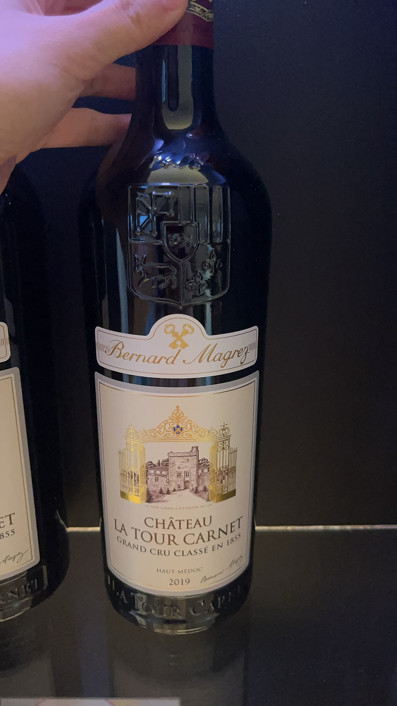
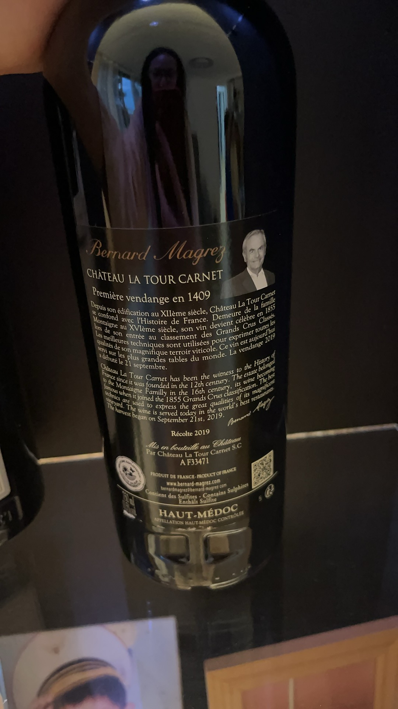

Bordeaux · Left Bank
Haut-Médoc · Grand Cru Classé en 1855 · 2019
Touch the label to begin点击酒标开始
Where is Château La Tour Carnet?
这座 Château 到底在哪里？
The Question
Château La Tour Carnet
左岸 · 上梅多克
Schematic map — regions shown by area, not to scale示意地图，非精确坐标
Left Bank
左岸凭什么？
Now go underground进入土壤剖面
Rain → gravel → drainage雨水穿过砾石，快速排水
Gravel absorbs heat by day, releases it by night砾石白天蓄热，夜间缓慢释放
So the roots go deeper于是根系向下延伸
HAUT-MÉDOC
=
Appellation产区
On the back label背标上写着APPELLATION HAUT-MÉDOC CONTRÔLÉE
2019
MILLÉSIMEVINTAGE年份
2019 = the year the grapes were picked2019 是採收年份
the year it was bottled不是装瓶年份
Back label: “The harvest began on September 21st, 2019.”
2019
VINTAGE年份
1855
CLASSIFICATION分级
Two numbers on one label. They are not the same kind of thing.同一张酒标上的两个数字，意义完全不同。
PARIS
Exposition Universelle
1855
Bordeaux brokers ranked the Médoc’s châteaux for the world’s fair.1855 年巴黎世博会，波尔多经纪人为梅多克酒庄排定等级。
1855 Classification · Médoc
61 châteaux today今日共 61 家
CHÂTEAU LA TOUR CARNET
QUATRIÈME CRU
四级庄
TURN THE BOTTLE →转到背面
Première vendange en 1409
=
第一次葡萄采收：1409
First harvest, 1409
One bottle, six centuries
Three years on one bottle同一瓶酒上的三个年份
MIS EN BOUTEILLE
AU CHÂTEAU
在酒庄装瓶
Bottled at the estate
The two labels are telling you the same thing.正标和背标互相印证。
Inside the bottle
Red varieties permitted in Haut-Médoc上梅多克允许的主要红葡萄品种
2019 exact blend — to verify本年份具体比例待核实
CHÂTEAU
LA TOUR CARNET
HAUT-MÉDOC
2019
click / →
Presenter keys